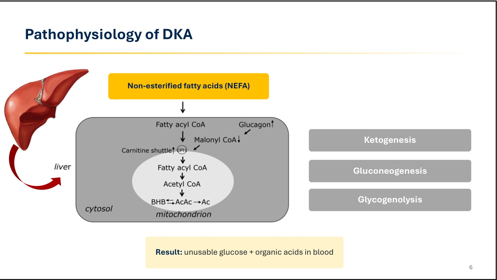
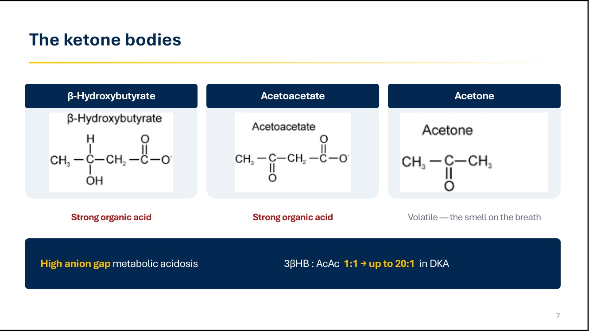
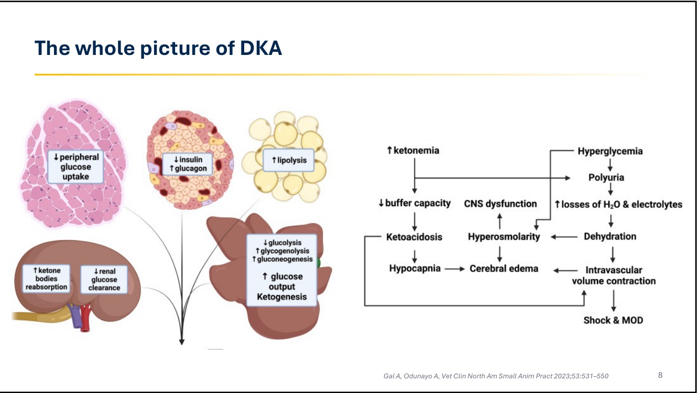
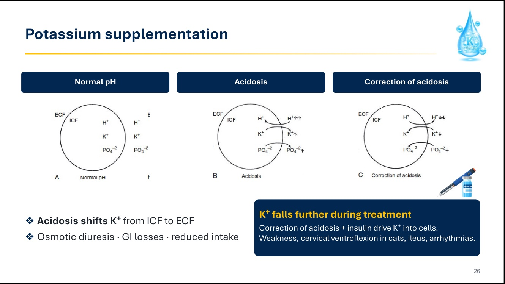

糖尿病併發症：DKA、eDKA 與 HHS
主講：Antonio Tardo, DVM, PhD, Dipl. ECVIM-CA｜UC Davis 小動物內科助理教授
2026 年 10 月 6 日｜VET-KU × Texas A&M 內科研討會｜場次 08
🎧 聆聽課堂錄音（Plaud）↗
資料來源標記：
投影片（頁碼為投影片右下角編號；9、29、33 為隱藏頁）
🎤 課堂逐字稿（盡量完整保留）
💡 補充 整理者補充（機轉、計算、交叉參照）
【更正】 逐字稿轉文字錯誤或講述口誤，以講義為準（完整列表見最後一節）
⭐ 必記原則
- DKA 和 HHS 是同一個光譜，差在「還剩多少胰島素」
- 診斷三要素：高血糖＋酮血症/酮尿＋代謝性酸中毒
- 測血中 3βHB，尿液試紙只測得到 AcAc
- 治療中尿酮變更陽性 ≠ 惡化
- 血糖正常 ≠ 沒有 DKA（SGLT2i、厭食、剛打過胰島素）
- SGLT2i 的 eDKA 多發生在前 2 週，約 5–7%
- 先輸液、先補鉀，再給胰島素
- 血糖每小時降 50–75 mg/dL；鈉每天 ≤ 10–12 mEq/L
- 血糖降到約 250 時加葡萄糖，不要停胰島素，直到酮症解除
- HHS 要更慢：滲透壓每小時 ≤ 3 mOsm/kg，先輸液、胰島素晚點給
- 用你的醫院做得到的胰島素方案
- 找出共病，它決定預後
核心觀念與總覽
▾🎤 場次資訊與大綱
- 講者：Antonio Tardo（DVM, PhD, Dipl. ECVIM-CA），UC Davis 小動物內科助理教授。也是 01 PU/PD 的講者。
- 🎤 前兩天都在談糖尿病，這一場談糖尿病的急性併發症：DKA，以及一個重要的新型態，正常血糖 DKA（eDKA）。因為現在越來越常用 SGLT2 抑制劑，所以要特別談這種併發症，它其實跟標準的 DKA 很像。另外也會談高滲透壓高血糖症候群（HHS）。
| # | 主題 | 重點 |
|---|---|---|
| 1 | 病理生理 | 為什麼會產生酮體、為什麼病患會脫水 |
| 2 | 誘發因子 | 同時存在的疾病本身就是診斷的一部分 |
| 3 | 診斷 | DKA、正常血糖 DKA（eDKA）、HHS |
| 4 | 治療 | 輸液 → 電解質 → 胰島素 → 營養 |
| 5 | 監測與預後 | 要測什麼、什麼時候可以降級照護 |
- 🎤 要先懂病理生理，才會懂怎麼治療。
- 🎤 這些是糖尿病患非常糟的併發症。病患會從一個很好治療的疾病，變成一個幾小時內就可能死亡的疾病。
🎤 DKA 與 HHS：同一個光譜
- 兩者都是糖尿病急性、可能致命的併發症。
- 它們不是兩種不同的疾病，而是由胰島素缺乏程度決定、落在同一光譜上的不同位置。
- 由壓力和共病誘發 → 升糖素、兒茶酚胺、皮質醇上升。
DKA
- 胰島素嚴重缺乏 ++
- 脂肪分解失控
- 生酮 → 酸中毒
混合型 DKA / HHS
- 兩者重疊
- 酮症＋高滲透壓
- 臨床上很常見
HHS
- 還有殘存胰島素
- 生酮被抑制
- 極端高血糖
- 🎤 區分兩者的關鍵通常在胰島素缺乏本身。DKA 的動物大多是胰島素完全缺乏，所以有脂肪分解，酮體大量產生。
- 🎤 HHS 的動物還有一些殘存的胰島素分泌，足以阻止脂肪分解，但動物會出現嚴重高血糖【更正】（逐字稿誤為 hypoglycemia），進而造成高滲透壓。
- 🎤 有時候酮體上升和嚴重高滲透壓會同時存在，所以要把病患定義成 HHS 還是 DKA，有時候並不容易。
補充：抑制脂肪分解所需的胰島素量，遠少於控制血糖所需的量。所以只要還有一點胰島素，就不太會生酮，但血糖仍會飆高（HHS）；完全沒有胰島素時就會生酮（DKA）。
💡 補充 與其他場次的關聯
- 滲透性利尿與 PU/PD：見 01 PU/PD 診斷流程（講者在本場多次提到「10 月 5 日講過」）。
- SGLT2i 的病患篩選、eDKA 與 BHB 監測：見 04 SGLT2 抑制劑的仿單外使用。
- 實際 DKA 病例的穩定處置與飲食：見 06 病例 Bobo 的 DKA 穩定處置。
1. DKA 的病理生理
▾🎤 兩個步驟
第一步：脂肪分解增加
- 送到肝臟的 NEFA（非酯化脂肪酸）增加
- 正常情況下胰島素會抑制這個過程
第二步：肝臟代謝改變
- 從合成三酸甘油酯轉為 β-氧化
- 升糖素驅動酮體生成
- 關鍵：升糖素／胰島素比值上升
殘存的胰島素分泌會抑制脂肪分解，結果就是嚴重高血糖但沒有酮症（也就是 HHS 的伏筆）。
- 🎤 胰島素缺乏時，身體會試著從脂肪組織取得能量，而脂肪最終的產物就是酮體。酮體上升造成酮症。
- 🎤 第二步是肝臟代謝異常【更正】（逐字稿誤為 abnormal adipic metabolism，應為 hepatic）。肝臟拿 NEFA 做 β-氧化產生能量，但最終產物是酮體，造成酮症。
🎤 流程圖一：從荷爾蒙到 NEFA
- 胰島素缺乏和/或胰島素阻抗 → 周邊組織利用葡萄糖和酮體的能力下降
- 兒茶酚胺、皮質醇、生長激素（GH）、升糖素上升 → 蛋白質分解增加 → 提供糖質新生的原料
- 兩者共同 → 活化荷爾蒙敏感性脂解酶（HSL） → 脂肪分解 → NEFA
- 🎤 一邊是胰島素缺乏與胰島素阻抗，另一邊是反調節荷爾蒙（catecholamines、cortisol、GH、glucagon）增加。這些荷爾蒙很重要，因為它們刺激蛋白質分解，身體會嘗試從蛋白質取得能量，啟動糖質新生路徑。
- 🎤 同時因為胰島素缺乏，身體再也無法利用葡萄糖，所以才轉向從脂肪拿能量。
- 🎤 胰島素缺乏加上其他荷爾蒙上升，尤其是兒茶酚胺，會活化 HSL，刺激脂肪分解，產物就是 NEFA。
補充：HSL 平常被胰島素抑制，被壓力荷爾蒙活化。DKA 不只是「缺胰島素」，而是「缺胰島素」加上「壓力荷爾蒙暴衝」的雙重打擊，這也是共病（胰臟炎、感染等）那麼重要的原因。
🎤 流程圖二：肝臟裡發生什麼事

- 肝臟同時進行三件事：生酮、糖質新生、肝醣分解。
- 結果：血中充滿無法利用的葡萄糖和有機酸。
- 🎤 NEFA 在肝臟代謝，也就是 β-氧化。肝臟想從 NEFA 取得能量，但最終產物是酮體：β-羥丁酸、乙醯乙酸、丙酮，進而造成 DKA。
- 🎤 肝臟也增加糖質新生（因為蛋白質分解增加）。血中葡萄糖更多了，但沒有胰島素，葡萄糖進不了細胞，動物無法使用。
- 🎤 另一個過程是肝醣分解：肝臟仍然在努力製造葡萄糖當能量，但還是用不了。
補充：Malonyl CoA 是肉鹼棕櫚醯轉移酶 I（CPT-1）的抑制劑。升糖素讓 Malonyl CoA 下降，等於解除煞車，脂肪酸大量進入粒線體做 β-氧化。產生的 Acetyl CoA 超過 TCA 循環的處理量，就轉成酮體。
🎤 酮體

| 酮體 | 性質 |
|---|---|
| β-羥丁酸（3βHB） | 強有機酸 |
| 乙醯乙酸（AcAc） | 強有機酸 |
| 丙酮 | 具揮發性，就是口氣裡的味道 |
- 造成高陰離子間隙（high anion gap）代謝性酸中毒。
- 3βHB : AcAc 正常約 1:1，DKA 時可達 20:1。
- 🎤 3βHB 是最重要的一種。要記住，因為我們測酮體時要測的就是 3βHB。
- 🎤 正常情況下最常見的是 3βHB 和 AcAc 兩種。但在 DKA 時，3βHB 會大量產生。要做診斷，先測 3βHB。
- 🎤 這有實務上的影響：3βHB 可以用血酮機在血中測，尿液測不到；尿液測的是乙醯乙酸。最終的問題是陰離子間隙代謝性酸中毒，因為酮酸是強有機酸。
補充：為什麼 DKA 時以 3βHB 為主？
- DKA 時粒線體內 NADH/NAD⁺ 比值升高（脂肪酸大量 β-氧化，加上組織灌流差），AcAc → 3βHB 的反應被推向右邊，比例可達 20:1。
- 測 3βHB 的理由不只是量最多：① 尿液試紙（nitroprusside 反應）只會跟 AcAc（和少量丙酮）反應，完全測不到 3βHB；② 血酮比尿酮早上升，寡尿的病患甚至沒有尿可以測；③ 治療中能正確反映進展（見第 7 節）。
🎤 DKA 全貌（Gal & Odunayo 2023）

器官層面（左圖）
- 肌肉：周邊葡萄糖攝取 ↓
- 胰臟：胰島素 ↓、升糖素 ↑
- 脂肪：脂肪分解 ↑
- 肝臟：糖解 ↓、肝醣分解 ↑、糖質新生 ↑、葡萄糖輸出 ↑、生酮
- 腎臟：酮體再吸收 ↑、腎臟葡萄糖清除 ↓
後果（右圖）
- 酮血症 → 緩衝能力 ↓ → 酮酸中毒 → 低碳酸血症（呼吸代償）
- 高血糖 → 多尿 → 水和電解質流失 → 脫水 → 血管內容積減少 → 休克與多重器官衰竭（MOD）
- 高滲透壓 → 中樞神經功能異常、腦水腫
- 🎤 這張是剛才內容的總整理。所有過程造成酮體產生增加：血中酮體更多、葡萄糖更多，於是高滲透壓。高滲透壓造成部分臨床症狀，也造成滲透性利尿（10 月 5 日講過）。
- 🎤 所以動物會 PU/PD：酮體和葡萄糖跑到尿裡，帶走水分，造成脫水。
補充：這張圖把「酸中毒」和「脫水」兩條致命路徑串起來。臨床上真正致死的常常是低血容性休克，而不只是 pH 太低。
2. 誘發因子：狗與貓
▾🎤 為什麼要找誘發因子
- 大多數動物有另一個疾病觸發 DKA，所以知道可能的共病和誘發因子非常重要。
- DKA 的病患可能是新診斷的糖尿病，也可能是已經診斷並在治療中的糖尿病患，卻發生了別的併發症。
🎤 狗
誘發情境
- 新診斷的糖尿病（最常見）
- 已知糖尿病：胰島素劑量不足或有共病
69% 的病例有共病
- 急性胰臟炎（73% 的狗 PLI 上升）
- 細菌感染（UTI）
- 腫瘤
- 腎上腺皮質功能亢進、外源性類固醇
- 發情間期（diestrus）
實務上
- 尋找共病
- 未絕育母犬 → 先給黃體素受體拮抗劑，穩定後再絕育
- cPLI 上升很常見：要配合臨床表現判讀
- 🎤 急性胰臟炎是狗最常被報告的共病。
- 🎤 尿路感染（UTI）：現在的 UTI 指引建議只有出現症狀才治療。但講者認為，在這個族群裡證據不夠，因為這些動物病得很重、需要加護治療，所以也許需要治療。目前沒有研究顯示在這個族群治療或不治療 UTI 是否有益。
- 🎤 腫瘤也常見，因為牠們多是老年動物。
- 🎤 類固醇給藥：如果動物因為任何原因在吃糖皮質素，要記住。
- 🎤 發情間期在狗很重要要記得：未絕育母犬的黃體素增加，會刺激 GH 分泌增加（造成胰島素阻抗），所以要讓動物先絕育。
- 🎤 如果是未絕育母犬，又不能馬上絕育，可以先用黃體素拮抗劑【更正】（逐字稿誤為 progesterone tablets），避免胰島素阻抗，等動物穩定再手術。
- 🎤 胰臟指數上升非常常見，但不代表所有動物都有胰臟炎。上升可能也跟糖尿病和 DKA 本身有關。結果一定要配合臨床狀況和其他發現（例如超音波）來判讀。
補充：發情間期的黃體素會刺激乳腺分泌生長激素，造成嚴重胰島素阻抗。黃體素受體拮抗劑例如 aglepristone。
🎤 貓
80–90% 的貓有共病
- 急性胰臟炎
- 肝膽疾病
- 腸胃道疾病
- CKD 或 AKI
- 細菌（UTI）與病毒感染
- 腫瘤
- 類固醇給藥
實務上
- 胰臟炎和脂肪肝常常是隱性的 → 做超音波
- 尿液培養：感染可能沒有臨床症狀
- 厭食本身就會促進酮症
- 早期營養支持很重要
- 🎤 大多數貓有急性胰臟炎，也常有膽道疾病（膽管炎）。發炎會導致肝脂質沉積。腸胃道疾病也很常見，例如 IBD 和淋巴瘤的鑑別。
- 🎤 腎臟病也常見（CKD 或 AKI），還有感染，很多是 UTI。
- 🎤 所有動物都可能有腫瘤。類固醇在 10 月 5 日已經講過：貓使用類固醇最常見的併發症就是糖尿病，糖尿病如果不治療，動物可能會死。所以一定要問飼主貓有沒有在吃任何藥。
- 🎤 實務上，胰臟炎和脂肪肝【更正】（逐字稿誤為 parvovirus and leukaemias）可能很難察覺。通常要做超音波。
- 🎤 尿液培養是另一個重點。講者偏好做尿液培養，因為大部分這類動物最後都會用抗生素，至少有藥敏結果，知道哪種抗生素才對。
- 🎤 要小心厭食：它本身就會促進酮症，而且貓還可能因此發生肝脂質沉積【更正】（逐字稿為 has a whole），對已經很病的動物又多一個併發症。
- 🎤 所以營養支持很重要（第 16 節）。
補充：貓的共病比例比狗更高，而且更常「看不出來」。厭食幾天就可能進展成脂肪肝，所以營養在貓的 DKA 治療中不是附加項目。
3. HHS 的定義與病理生理
▾🎤 高血糖高滲透壓症候群（HHS）
嚴重高血糖
- > 600 mg/dL（34 mmol/L）
高滲透壓
- > 330 mOsm/kg，常常 > 400
脫水
- 通常很嚴重
酮體
- 血液和尿液中沒有或很少
共病很常見：腎衰竭、CHF、感染、胰臟炎，而且共病決定預後。
- 🎤 差別在哪？HHS 有非常嚴重的高血糖，但沒有或只有極少酮尿。原因如前述：這些動物還有一些胰島素分泌，足以阻止脂肪分解，但不足以防止高血糖。
- 🎤 嚴重高血糖造成嚴重高滲透壓（逐字稿說「通常超過 300 mOsm/kg」，講義寫 > 330），所以這些動物非常非常脫水。
- 🎤 HHS 的共病也很常見，最重要的是腎衰竭（CKD 和 AKI），因為它是誘發因子之一：這些狗貓無法處理尿糖，GFR 下降讓高血糖和高滲透壓更嚴重【更正】（逐字稿誤為 HGF-R、hypercoagulability）。
🎤 HHS 的病理生理
- 部分胰島素缺乏：足以防止脂肪分解和生酮，但不足以控制血糖。
- 壓力荷爾蒙上升：由共病驅動。
- 高血糖 → 滲透性利尿：初期 GFR 還正常，尿糖排出能限制血糖上升。
- 低血容造成 GFR 下降：葡萄糖排不出去 → 極端高血糖。
腦部脫水
- 高滲透壓把水分從神經元拉出來
- → 喝水能力受損
- → 更脫水
沒有酮酸 = 沒有早期症狀
- 病患來院時間比 DKA 晚
- 血糖比 DKA 高
- 🎤 部分胰島素缺乏，加上 DKA 提到的壓力荷爾蒙（反調節荷爾蒙）。
- 🎤 高血糖【更正】（逐字稿誤為 hypoglycemia）造成滲透性利尿，動物脫水。到某個時間點，低血容使 GFR 下降，動物再也無法處理這麼嚴重的高血糖，於是發展出低血容和臨床症狀。
- 🎤 動物會細胞脫水：高滲透壓時，水分會從腦細胞跑出來（逐字稿此處說成 cerebral edema；依講義應為腦部脫水，腦水腫是治療太快時的併發症，見第 11 節）。
- 🎤 這造成意識異常，動物不再喝水，又進一步加重脫水和低血容。
- 🎤 因為沒有酮酸，這些動物通常沒有早期臨床症狀，來到醫院時已經病得非常重。
補充：第 4 點是重點。腎臟就像洩壓閥，只要 GFR 還在，血糖就很難超過 600；一旦脫水造成 GFR 下降，閥門關掉，血糖就會飆到 800–1000+。這也解釋了為什麼 HHS 只靠輸液恢復 GFR，血糖就會明顯下降（第 15 節）。
4. 臨床症狀：DKA 與 HHS
▾🎤 臨床症狀
全身性
- PU/PD（就診時可能已經消失）
- 厭食、嘔吐、嗜睡
- 體重減輕
- 脫水 → 低血容性休克
神經與其他
- 意識改變：沉鬱 → 昏迷
- 神經症狀：運動失調、轉圈、踱步
- 共病的症狀（例如腹痛）
Kussmaul 呼吸：快速、深、節律規則，是呼吸代償。
- 🎤 症狀變化很大。當然有糖尿病本身的症狀，就像新診斷的糖尿病狗貓：PU/PD、多食、體重減輕。
- 🎤 但 DKA 時，因為酮體，大多會出現厭食、嘔吐、嗜睡。高滲透壓造成脫水。
- 🎤 主要在 HHS，還會出現神經症狀：嚴重沉鬱，甚至昏迷。動物不吃不喝，讓病患的處置更複雜。
- 🎤 也可能有共病的症狀，取決於同時存在的是什麼病。
- 🎤 講者問台下有沒有看過 Kussmaul 呼吸【更正】（逐字稿為 guzmal breathing），它和動物試圖排除酸有關。
補充：PU/PD「可能消失」是因為病患已經嚴重脫水、GFR 下降，或根本不喝水了。Kussmaul 呼吸是藉由排出 CO₂ 來代償代謝性酸中毒（酮體本身不是從肺排出，丙酮的氣味除外）。
5. DKA 與 DK 的診斷
▾🎤 診斷三要素
高血糖 ＋ 酮血症或酮尿 ＋ 代謝性酸中毒 ＝ DKA
| 項目 | 標準 |
|---|---|
| 血糖 | > 250 mg/dL |
| 酮體 | 血中 3βHB 上升（首選） |
| 血氣分析 | pH < 7.35、HCO₃⁻ 下降 |
有酮症但沒有酸血症 = 糖尿病酮症（DK, diabetic ketosis）
- 🎤 這個三要素來自歐洲兒童內分泌學會（European Society for Paediatric Endocrinology）的指引。
- 🎤 DKA 的定義通常是血糖 > 250。理想上要測 3βHB，因為它是最主要的有機酸。做血氣分析時，會看到低 pH 和低碳酸氫根。
- 🎤 當然也可以有酮症而沒有酸血症，叫作糖尿病酮症。這類病患大多可以門診處理，不需要住院。
- 🎤 每個新診斷的糖尿病患多少都會有一些酮症，這算是正常的。
6. 正常血糖 DKA（eDKA）與 SGLT2 抑制劑
▾🎤 eDKA 的診斷
- 定義：有酮酸中毒，但血糖或組織間液葡萄糖 < 250 mg/dL。
- 何時懷疑：
- 使用 SGLT2 抑制劑
- 長期厭食、飢餓
- 來院前不久剛打過胰島素
- 🎤 以前 DKA 都是非常高血糖，但現在越來越常用 SGLT2 抑制劑，所以血糖正常時也要想到 DKA，這叫作正常血糖 DKA【更正】（逐字稿誤為 hypoglycemic keto）。
- 🎤 最常見的情況是貓用 SGLT2 抑制劑治療時。10 月 5 日講過，狗是胰島素依賴型，所以不會在狗單獨使用 SGLT2i 而不給胰島素。
- 🎤 其他少見情況：飢餓時也可能血糖正常；或動物其實在 DKA，但幾小時前剛打過胰島素，所以測血糖正常，酮體卻非常高。
- 🎤 病理生理一樣。看起來很奇怪，為什麼血糖正常還會酮酸中毒？原因是血中的葡萄糖即使正常，也因為沒有胰島素而無法被細胞利用。身體就從其他受質（脂肪）取得能量，最終產物就是酮體。這就是 SGLT2i 治療的動物發生 DKA 的原因。
🎤 eDKA 與 SGLT2 抑制劑
- Velagliflozin（Senvelgo）和 bexagliflozin（Bexacat）已核准用於貓糖尿病。
- 適應症：還有殘存 β 細胞功能、沒有酮症的貓。
- 約 5–7% 治療中的貓會發生。
- 大多發生在前 2 週。
- 🎤 這個併發症的頻率 10 月 5 日講過，在近兩年發表的研究中約 5–7%，最常發生在前兩週。
- 🎤 所以開這個藥（velagliflozin【更正】，逐字稿為 semagro）給貓時，要請飼主特別在前兩週監測。這是動物最容易發生 DKA 的時間點。
- 🎤 但 DKA 也可能在任何時間點發生，甚至治療一年、幾年後。只是關鍵期是前兩週。
- 🎤 如果看只用胰島素治療的貓族群，DKA 的頻率可能差不多，甚至更高。重點是要了解所開的藥會造成什麼併發症、要怎麼處理。對 SGLT2i 來說，選對病患是最重要的因素。
補充：SGLT2i 讓葡萄糖從尿中排掉，所以血糖「看起來」正常，但身體其實仍然胰島素不足，脂肪分解和生酮照樣進行。詳見 04 SGLT2 抑制劑的仿單外使用。
🎤 eDKA 的風險因子（SENSATION 研究，Behrend 2024）
| # | 風險因子 | 🎤 講者解釋 |
|---|---|---|
| 1 | 之前接受過胰島素治療 | 不是胰島素本身的問題。這些貓通常很久以前就診斷了，代表牠可能已經不能分泌內生性胰島素。目前沒有任何實驗室參數能預測哪隻動物還在分泌胰島素。已經長期打胰島素的貓可能不是最好的候選者，但仍然可以考慮這個藥。 |
| 2 | 第 2–3 天體重減輕 ≥ 5%，或前 2 週減輕 > 8% | 牠們正在大量消耗體脂肪來製造酮體。 |
| 3 | 任何時間點三酸甘油酯 > 500 mg/dL | 代表正在大量利用脂肪、動員大量三酸甘油酯。 |
| 4 | 治療期間三酸甘油酯上升十倍 |
SGLT2i 治療期間的高風險情境
- 厭食、嘔吐
- 同時有其他疾病
- 手術、麻醉、長時間禁食
🎤 講者舉例
- 一隻已經打了兩年胰島素、三酸甘油酯很高、體重一直掉的貓，大概不是這個藥的理想候選者。
- 🎤 SENSATION 是這個藥在貓最大的研究之一。
- 🎤 任何造成厭食或嘔吐的原因，都可能觸發 DKA【更正】（逐字稿誤為 hypoglycemia）。任何共病也都是風險。
- 🎤 手術、麻醉、長時間禁食在貓還沒有資料，但人醫知道這些是發生 DKA 的風險情境。原因是：動物要麻醉、手術時通常會停藥，但藥效還會持續好幾天，有時甚至好幾週。所以如果動物術後不吃東西，就是酮酸中毒的風險因子。動物要手術或麻醉時要特別小心。
補充：實務上，開始 SGLT2i 後前兩週要密切監測酮體（最好用 3βHB 血酮機）並追蹤體重；遇到麻醉或手術要預先計畫停藥與術後營養（見第 18 節 Q&A 的牙科手術問題）。
7. 如何測量酮體？
▾🎤 尿液試紙 vs 照護現場（POC）3βHB 血酮機
尿液試紙
- 只偵測乙醯乙酸
- 血酮比尿酮先上升
- 尿液檢測可能漏掉早期 DKA
POC 3βHB 血酮機
- 全血 10 µL，Abbott Precision Xtra®
- 已在狗貓驗證
- 狗：3βHB > 3.8 mmol/L → Se 70%、Sp 92%
- 貓：3βHB > 2.55 mmol/L（血酮機）→ Se 94%、Sp 68%
3βHB 約占 DKA 酮體的 78%，而這正是試紙看不到的那一種。
- 🎤 從講者展示的圖可以看到，DKA 時大部分酮體是 3βHB（藍色那塊），約 20% 是乙醯乙酸，約 2% 是丙酮。
- 🎤 所以要測 3βHB，而且只能在血中測。講者問台下有沒有人在用血酮機。這台血酮機已在狗驗證，可以測 3βHB，表上的 cut-off 來自已發表的研究。
- 🎤 狗的 3βHB > 3.8 時，對 DKA 的敏感度 70%、特異度 92%。最常用的酮體 cut-off 是 2.4–2.5，可以當作考慮 DKA 的參考值。
- 🎤 尿液也可以測酮體，但要記得只會測到乙醯乙酸，不會測到 3βHB，所以可能錯過酮體早期的上升。不過如果尿酮陽性，代表血中 3βHB 可能已經非常高，所以尿酮對診斷還是有幫助。但如果要具體數字或要追蹤，最好測血中 3βHB。
治療中的陷阱
- 🎤 在 DKA 監測過程中測酮體，尿液試紙會隨時間變得更陽性。這不代表變差，只是因為治療讓 3βHB 轉成乙醯乙酸。所以尿酮不是監測 DKA 的好指標，要測血中 3βHB。
- 💡 治療後灌流和氧化還原狀態改善，3βHB 被氧化回 AcAc，病患在好轉，尿酮反而更陽性。這也是第 17 節「連續 2 次 3βHB 正常」才降級照護的原因。
8. DKA vs HHS 鑑別與 HHS 診斷
▾🎤 鑑別表
| DKA | HHS | |
|---|---|---|
| 血糖或組織間液葡萄糖（mg/dL） | > 250（eDKA 時 < 250） | > 600 |
| pH | < 7.3 | > 7.3 |
| 碳酸氫根（mmol/L） | < 18 | > 18 |
| 酮體（血、尿） | 陽性 | 少量或無 |
| 有效滲透壓 | 不一定 | > 320 mOsm/kg |
有效滲透壓 = 2 × Na⁺ + 葡萄糖；正常狗貓 280–300 mOsm/kg。
- 🎤 DKA 的血糖可以正常或偏高；HHS 通常非常高。
- 🎤 DKA 通常有酸中毒，HHS 沒有。但 HHS 仍可能有酸中毒，例如同時有急性腎損傷或其他造成代謝性酸中毒的狀況。
- 🎤 DKA 的酮體通常陽性且上升；HHS 通常沒有或只有很少量。
- 🎤 HHS 的滲透壓非常高。狗貓正常滲透壓約 280–300。
補充：公式單位：葡萄糖用 mg/dL 時要除以 18：有效滲透壓 = 2 × Na⁺ + Glu(mg/dL) ÷ 18。尿素不列入，因為它能自由穿過細胞膜，不會造成水分移動，所以叫「有效」滲透壓。另外，這張表 pH 切點是 7.3，p.15 是 7.35，屬於不同文獻的差異。
💡 補充 怎麼診斷 HHS（整理）
| 項目 | 標準 | 說明 |
|---|---|---|
| 血糖 | > 600 mg/dL（34 mmol/L） | 常遠高於此，800–1000+ 並不少見 |
| 有效滲透壓 | > 320 mOsm/kg（p.12 寫 > 330，常 > 400） | 超過 320 就開始警覺，超過 330 確定落在 HHS 範圍 |
| 酸鹼 | pH > 7.3、HCO₃⁻ > 18 | 沒有明顯酮酸中毒（除非有 AKI 等其他原因） |
| 酮體 | 陰性或微量 | 最好測血中 3βHB |
計算範例
- 有效滲透壓：Na 150、血糖 900 mg/dL → 2 × 150 + 900 ÷ 18 = 300 + 50 = 350 mOsm/kg → 符合 HHS。
- 校正鈉（p.37 公式）：測得 Na 140、血糖 900 → 140 + 1.6 × (900 − 100) ÷ 100 ≈ 153 mEq/L。高血糖把細胞內的水拉出來稀釋血鈉，所以測得的鈉看起來正常甚至偏低，實際自由水缺乏更嚴重。
- 如果有機器直接測的滲透壓（冰點下降法），那是「總滲透壓」，包含尿素，數值會比有效滲透壓高。
DKA、混合型、HHS 的區分
| DKA | 混合型 | HHS | |
|---|---|---|---|
| 血糖 | > 250 | 通常很高 | > 600 |
| 酮體 | 陽性 | 陽性 | 無或微量 |
| pH / HCO₃⁻ | < 7.3 / < 18 | 酸中毒 | > 7.3 / > 18 |
| 滲透壓 | 不一定 | > 320 | > 320 |
混合型臨床上很常見：胰島素要照 DKA 的方式給（因為有酮體），但輸液和矯正速度要照 HHS 的規則慢慢來（因為滲透壓高）。
什麼時候要懷疑 HHS
- 血糖非常高，但沒有 Kussmaul 呼吸，血氣也沒有明顯酸中毒
- 神經症狀比 DKA 明顯：沉鬱、昏迷、運動失調、轉圈、癲癇（腦部脫水）
- 極度脫水，BUN／肌酸酐上升（GFR 下降正是血糖飆高的原因）
- 病程較長、來院較晚（沒有酮酸，早期症狀不明顯）
- 有共病：腎病、心衰竭、感染、胰臟炎，或正在使用類固醇
9. 診斷檢查
▾🎤 Diagnostic work-up
基本
- 血液學（含血液抹片）
- 生化＋Ca、P，± CRP/SAA
- 尿液分析 ± 尿液培養
- 靜脈血氣（pH、HCO₃⁻、電解質、陰離子間隙）
依懷疑加做
- 腹部超音波
- ± 胸腔 X 光
- ± 其他檢查（PLI／DGGR lipase、葉酸／鈷胺素、細針抽吸）
- ± 黃體素（未絕育母犬）
共病對預後的影響，比初始血糖或 pH 更大。
- 🎤 CBC、血液生化、尿液分析是這類病患的標準基本檢查。
- 🎤 尿液培養寫「±」，因為要看懷疑程度和尿沉渣有沒有細菌。但講者通常喜歡做尿液培養。
- 🎤 要做靜脈血氣，測 pH、碳酸氫根、電解質和陰離子間隙。
- 🎤 其他檢查依懷疑的疾病而定。講者通常至少會做腹部超音波。胸腔 X 光看懷疑程度：腫瘤【更正】（逐字稿為 neonatia）是常見共病之一，要確定沒有會影響預後的腫瘤。
- 🎤 未絕育母犬可以測黃體素，考慮用黃體素拮抗劑治療。
- 🎤 其他依懷疑加做：胰臟炎測 PLI 或 DGGR lipase【更正】（逐字稿為 endometrium）、腸胃道疾病測葉酸／鈷胺素、有異常就做 FNA。檢查計畫會隨懷疑的疾病改變。
10. 治療五目標與 eDKA 的差異
▾🎤 治療：五個目標
| # | 目標 | 講義 | 🎤 講者說明 |
|---|---|---|---|
| 1 | 恢復水分與電解質 | 永遠先輸液 | 補回因高血糖（滲透性利尿）和低血容而流失的水分和電解質。 |
| 2 | 給胰島素 | 抑制脂肪分解、生酮、肝臟葡萄糖輸出 | 胰島素讓代謝從脂肪切回葡萄糖：阻斷脂肪分解、恢復正常葡萄糖代謝。 |
| 3 | 需要時給葡萄糖 | 讓胰島素可以繼續給，不會低血糖 | 開始胰島素後血糖一路下降，到某個點時不要停胰島素，而是加葡萄糖，葡萄糖和胰島素同時給，維持葡萄糖代謝。 |
| 4 | 慢慢來 | 太積極矯正會造成滲透壓相關併發症 | HHS 尤其如此。嚴重高滲透壓不要在幾小時內矯正完，會有併發症。具體數字見第 11、15 節。 |
| 5 | 治療誘發疾病 | 胰臟炎、感染、發情間期、類固醇 | 感染、胰臟炎或任何和 DKA 相關的狀況都要治療。 |
| — | 矯正酸中毒 | 大多靠輸液和胰島素自行改善 | 給輸液、給胰島素、減少酮體生成之後，酸中毒大多會改善。 |
補充：DKA 的治療終點是「酮體清除」，不是「血糖正常」。血糖通常比酮體先降，所以要補葡萄糖來「掩護」胰島素繼續作用。一般不建議常規給碳酸氫鈉。
🎤 eDKA 的治療有什麼不同？
停用 SGLT2 抑制劑
- 但仍然需要胰島素
一開始就給葡萄糖
- 追蹤 3βHB 和低血糖
病程會比較長
- 尿糖會持續數天到數週
- 酮體清除得慢
- 有低血糖風險
- 🎤 eDKA 有什麼不一樣？沒有，治療完全一樣。唯一的差別是停掉 SGLT2 抑制劑、開始胰島素。
- 🎤 這看起來很怪，動物血糖正常，卻要開始打胰島素。但還是要給胰島素，也要給葡萄糖。這類病患常常需要高濃度葡萄糖，或者長時間給葡萄糖，因為 SGLT2 抑制劑的作用還在。
- 🎤 預期病程比較長，可能很難處理，原因就是藥停了但還在作用。
- 🎤 最近發表的一篇病例報告：一隻用 SGLT2i 治療（逐字稿為 dabiglucazine，藥名無法確認）的貓診斷為 eDKA。出院後兩週，這隻貓又出現尿糖（逐字稿為 hyperglycemia；依講義內容應指尿糖持續），代表藥效持續了兩週。所以這類病患很難處理：藥還在作用，同時又要努力減少酮酸生成。
11. 輸液：多少、多快、哪一種
▾🎤 給多少、多快
低灌流（前 1–2 小時）
- Bolus：狗 10–20 mL/kg、貓 5–10 mL/kg，15–20 分鐘給完
- 每次 bolus 後重新評估：意識、心跳、脈搏品質、CRT、血壓
脫水（接下來 12–48 小時）
- 缺水量（mL）= 脫水 % × 體重（kg）× 10
- 加上維持量 2–2.5 mL/kg/h
- 加上持續流失（嘔吐、腹瀉、多尿）
| 慢慢來（Go slowly） | |
|---|---|
| 血糖 | 每小時下降目標 50–75 mg/dL |
| 鈉 | 每天變化 ≤ 10–12 mEq/L |
血漿滲透壓快速下降會讓水分跑進細胞。病患看似改善後幾小時又惡化 → 考慮腦水腫。
- 🎤 這張講者不多講，因為大家都比他更懂怎麼處理低灌流、怎麼補脫水。他想給的是血糖和鈉的目標。
- 🎤 一開始輸液，血糖就已經開始下降。所以先讓動物補水，之後再開始胰島素（具體時間見第 13 節）。
- 🎤 血糖通常希望每小時降 50–75 mg/dL。鈉要低於 10–12 mEq/L【更正】（錄音說 per hour，講義為 per day），避免鈉濃度變化太快造成神經併發症。
- 🎤 滲透壓快速下降會把水推進細胞。高滲透壓時，腦會產生一些物質來對抗高滲透壓，而腦需要時間把這些滲透物質移除。如果滲透壓降得太快，水跑進腦細胞，造成腦水腫，出現神經症狀，這可能成為安樂死的原因。所以滲透壓的處理要小心。
補充：腦細胞產生的物質稱為「特發性滲透分子（idiogenic osmoles）」。缺水量公式裡的脫水 % 用整數，例如 8% 就寫 8：10 kg、8% 脫水 → 8 × 10 × 10 = 800 mL。
🎤 選哪一種輸液？
| Na⁺ | Cl⁻ | K⁺ | Ca²⁺ | Mg²⁺ | 緩衝劑 | mOsm/L | pH | |
|---|---|---|---|---|---|---|---|---|
| 血漿 | 145 | 105 | 5 | 5 | 3 | 24 | 300 | 7.4 |
| 0.9% NaCl | 154 | 154 | 0 | 0 | 0 | 0 | 308 | 5.0 |
| 乳酸林格氏液 | 130 | 109 | 4 | 2.7 | 0 | 28 | 273 | 6.5 |
| Plasma-Lyte | 140 | 98 | 5 | 0 | 3 | 50 | 295 | 7.4 |
| Normosol-R | 140 | 98 | 5 | 0 | 3 | 50 | 295 | 7.4 |
表格改編自 Feldman & Nelson, Canine and Feline Endocrinology, 4th ed., 2015:333；JBDS Adult DKA Guidelines 2023
0.9% NaCl
- 人醫指引首選
- Na⁺ 較高 → 滲透壓下降較慢
- Cl⁻ 較高 → 高氯性酸中毒、可能造成腎損傷
平衡晶體液
- 較接近血漿、較不會酸化
- 含鉀和可代謝的緩衝劑
- 要注意鈉和滲透壓
狗貓沒有研究比較 DKA 的輸液種類：選哪種輸液，沒有給「足量」來得重要。
- 🎤 狗貓的 DKA 沒有特定的輸液建議，但人醫通常偏好生理食鹽水，因為鈉濃度較高，滲透壓下降比較慢。
- 🎤 但這些病患已經脫水，生理食鹽水的氯濃度高，可能造成腎損傷和高氯性酸中毒。
- 🎤 所以有些病患講者偏好平衡晶體液，因為電解質濃度較接近血漿。但問題可能是鈉：乳酸林格氏液的鈉比血漿低，如果動物有嚴重高血鈉【更正】（逐字稿為 hyponatremia；依上下文應為高鈉／高滲透壓），會讓鈉濃度降得很快，造成剛才提到的併發症。
- 🎤 用平衡晶體液時，注意鈉濃度和滲透壓。
補充：LRS 的滲透壓只有 273，對嚴重高滲透壓（尤其 HHS）的病患可能讓滲透壓降太快，這時 0.9% NaCl 比較安全。
12. 電解質：鉀、磷、鎂
▾🎤 補鉀：機轉

- 酸中毒使 K⁺ 從細胞內液（ICF）移到細胞外液（ECF）
- 滲透性利尿、腸胃道流失、攝取減少
治療過程中 K⁺ 會降得更低：矯正酸中毒＋胰島素會把 K⁺ 推回細胞內。症狀：無力、貓的頸部腹屈、腸阻塞、心律不整。
- 🎤 需要補充的電解質之一是鉀，因為病患會低血鉀。酸中毒時鉀從細胞內移到細胞外；但治療 DKA、矯正酸中毒時，鉀又回到細胞內。
- 🎤 給胰島素時，胰島素會把鉀從細胞外液推進細胞內。所以會低血鉀，可能很嚴重，也可能很難處理。
補充：DKA 病患全身總鉀量幾乎都缺乏，即使來院時血鉀正常甚至偏高，也只是假象。一打胰島素血鉀就會掉，所以要「先補鉀再打胰島素」。另見 06 Bobo 的高血鉀其實是全身缺鉀。
🎤 補鉀：劑量表
| 血清 K⁺（mEq/L） | 傳統指引（mEq/L 輸液） | DKA 指引（mEq/L 輸液） |
|---|---|---|
| > 5.0 | 0 | 0 |
| 4.0–5.0 | 10 | 20–30 |
| 3.5–4.0 | 20 | 30–40 |
| 3.0–3.5 | 30 | 40–50 |
| 2.5–3.0 | 40 | 50–60 |
| 2.0–2.5 | 60 | 60–80 |
| < 2.0 | 80 | 80 |
上限
- 絕對不要超過 0.5 mEq/kg/h
- 每 4–6 小時複檢 K⁺
注意
- 寡尿或無尿 → 謹慎補充
- 🎤 鉀有特定的補充指引。比較傳統指引和 DKA 指引，DKA 的補鉀量通常更高。
- 🎤 鉀也有每小時不能超過的速率。如果病患有急性腎損傷【更正】（逐字稿為 lactic acid injury），鉀的處理要小心。
補充：表上是「每公升輸液」的濃度，實際速率要乘上輸液速度，算出 mEq/kg/h 確認沒有超過 0.5。例：10 kg 的狗，輸液 40 mL/h、KCl 60 mEq/L → 0.04 L/h × 60 = 2.4 mEq/h ÷ 10 kg = 0.24 mEq/kg/h，安全。
🎤 補磷與補鎂
磷
- 來院時可能低、正常或高 → 開始給胰島素後會急遽下降
- 補充時機：P < 1.5 mg/dL；溶血（尤其是貓）；少數情況下的橫紋肌溶解、換氣不足、心律不整
- 劑量：0.01–0.12 mmol/kg/h CRI
- 每 8–12 小時複檢 P
鎂
- 總鎂 < 1.9 mg/dL（0.8 mmol/L）；游離鎂 < 0.5 mmol/L
- 頑固性低血鉀、低血鈣或心律不整時要檢查
- 補充劑量：0.25–1 mEq/kg/day
- 🎤 磷【更正】（逐字稿為 inosine）：病患來院時可能正常、偏高或偏低。但開始打胰島素後，磷會進入細胞，出現低血磷。
- 🎤 講者提到低血磷的主要併發症之一是橫紋肌溶解，是非常嚴重的併發症，所以要補磷（講義則把溶血列為主要情況，橫紋肌溶解為少見）。
- 🎤 補磷的切點約 1.5，但要看你的檢驗室怎麼測磷、用什麼參考範圍。
- 🎤 另一個要補的電解質是鎂。尤其是頑固性低血鉀（可能和低血鎂有關），或頑固性低血鈣，或病患出現心臟異常、心律不整時，就要補鎂【更正】（逐字稿誤為 supplement potassium）。
補充：低磷讓紅血球的 ATP 和 2,3-DPG 下降、膜變脆，進而溶血，貓特別容易。常用磷酸鉀補充，會同時補到鉀，要合併計算鉀的總量。低鎂會讓腎臟持續排鉀，所以「補鉀補不上來」時要想到鎂。
13. 胰島素：為什麼重要、何時開始
▾🎤 胰島素治療為什麼這麼重要？
脂肪組織
- ⊖ 脂肪分解
- 送到肝臟的 NEFA 減少
肝臟
- ⊖ 生酮
- ⊖ 糖質新生
- ⊕ 脂質儲存
肌肉與周邊
- ⊕ 葡萄糖攝取
- ⊕ 酮體利用
- K⁺ 和磷移入細胞
目標：血糖每小時下降 50–75 mg/dL，降到約 250 mg/dL → 加入葡萄糖，持續給胰島素，直到酮症解除。
- 🎤 這是治療中最重要的部分。第一，胰島素停止脂肪分解【更正】（逐字稿為 life forces）。第二，作用在肝臟：停止生酮、停止糖質新生、促進肝臟的脂質儲存。第三，促進細胞攝取葡萄糖，也促進酮體的利用。
- 🎤 併發症之一是鉀和磷下降。
- 🎤 這就是治療 DKA 時不要停胰島素的原因。
- 🎤 血糖目標前面講過：每小時降 50–75 mg/dL，降到 200–250 mg/dL 的範圍。
🎤 什麼時候開始胰島素？（DiFazio & Fletcher 2016）
| 早期 | 晚期 | |
|---|---|---|
| 開始時間 | 0–6 小時（中位數 4 小時） | 7–21 小時（中位數 8.3 小時） |
- 早期給胰島素 → DK／DKA 較快緩解
- 併發症率和住院時間相近
開始前要確認
- ✔ 已完成容積復甦
- ✔ K⁺ > 3.5 mEq/L，或已經在補鉀
- ✔ 已能每小時監測血糖
- ✔ 已備妥含葡萄糖輸液
- 🎤 一個重要問題是「什麼時候」開始胰島素【更正】（逐字稿說成 stop）。這篇研究比較早期（0–6 小時）和晚期（7–24 小時）給胰島素。
- 🎤 逐字稿寫「早期治療的狗，DKA 緩解時間較長」【更正】，與講義和原始研究相反：早期給胰島素緩解較快。
- 🎤 胰島素不要太晚開始，但同時要先讓病患補水（逐字稿為 retrain，應為 rehydrate）。
- 🎤 要先改善鉀濃度，因為開始胰島素後鉀會更低。
- 🎤 當然要開始監測血糖，因為這時血糖會下降，要避免低血糖。
- 🎤 也要注意磷：開始胰島素時磷應該要正常，因為開始胰島素治療後它會下降。
補充：過去常說「先輸液 6 小時再打胰島素」。這篇研究顯示提早給並不會增加併發症，重點不是等多久，而是上面四個條件有沒有到位。
14. 胰島素方案
▾🎤 短效胰島素：靜脈 CRI（Macintire 法）
| 血糖（mg/dL） | 輸液 | 胰島素速率（mL/h） |
|---|---|---|
| > 250 | LRS／Plasma-Lyte | 2 |
| 200–250 | 2.5% 葡萄糖 * | 1.5 |
| 150–200 | 2.5–5% 葡萄糖 | 1.5 |
| 100–150 | 5% 葡萄糖 § | 1 |
| < 100 | 5% 葡萄糖 | 停止 |
* 500 mL 乳酸林格氏液加 25 mL 50% 葡萄糖；§ 500 mL 乳酸林格氏液加 50 mL 50% 葡萄糖
配製
- 狗：2.2 U/kg 加入 48 mL 0.9% NaCl
- 貓：1.1 U/kg 加入 48 mL 0.9% NaCl
管路沖洗
- 胰島素會吸附在玻璃和塑膠上
- 接上病患前先讓約 50 mL 流過管路
- 🎤 這是最常用的方案，大家大概都知道：短效胰島素 CRI。狗和貓的劑量不同。記得沖洗管路，因為胰島素會黏在塑膠和玻璃上。
- 🎤 對講者來說，這是最有效的方案之一，也是他最常用的。但處理上有些困難：要常常改胰島素速率，要一直盯著調整。
- 🎤 所以新的文獻中出現其他方案：其他種類的胰島素，或固定速率、不隨時間調整的胰島素。
- 🎤 主要難處是：沒有加護病房、沒有護理人員、沒有其他人一起照顧時，這個方案會很難執行。
補充：這是原始 Macintire 法（2.2 U/kg 加入 250 mL，以 10／7／5 mL/h 給）的針筒幫浦濃縮版。48 mL 的 2 mL/h 約等於 250 mL 的 10 mL/h；狗在血糖 > 250 時約 0.09 U/kg/h。這套是「調整胰島素速率」的邏輯。
🎤 短效胰島素：固定速率輸注（Gant 2024）
| 袋子 | 內容 | 時機 |
|---|---|---|
| 1．胰島素 | 50 U 短效胰島素加入 500 mL 0.9% NaCl（0.1 U/mL）→ 以 1 mL/kg/h 給 = 0.1 U/kg/h | 固定速率，全程不變 |
| 2．晶體液 | 等張晶體液：補充＋維持 | 全程 |
| 3．葡萄糖 | 5% 葡萄糖（中央靜脈可到 10%） | 血糖 < 270 mg/dL 時開始，調整到維持 180–270 |
RCT：20 隻狗＋16 隻貓
- 狗：住院時間較短（129 vs 200 小時）
- 酮症緩解時間、併發症、存活率無差異
- 較多動物因血糖 < 126 mg/dL 需要暫停胰島素
- 🎤 固定速率胰島素：1 mL/kg/h，表上有所有細節。
- 🎤 主要問題是通常需要更多葡萄糖，因為無法調降胰島素濃度。
- 🎤 葡萄糖濃度高時是高張的，所以如果用到 10% 葡萄糖，可能要用中央靜脈導管避免靜脈炎。
- 🎤 研究結果：跟前面標準的短效胰島素方案相比，住院時間較短；酮症緩解、併發症、存活率沒有差異。
- 🎤 但更多動物需要停胰島素，也就是停掉一個對停止酮體生成非常關鍵的治療【更正】（逐字稿為 stopping the production of insulin）。這是這個方案的主要缺點，但它比另一個方案容易執行。
補充：這是人醫目前的做法：胰島素固定不動，用葡萄糖濃度調血糖。邏輯是胰島素劑量是為了清除酮體，不是為了降血糖。缺點是低血糖事件較多，需要較密集監測。
🎤 短效胰島素：肌肉注射法
- 起始：0.1–0.2 U/kg IM
- 之後 0.1 U/kg IM q1–2h，每小時測血糖
| 每小時血糖下降 | 調整 |
|---|---|
| < 50 mg/dL/h | 增加到 0.2 U/kg IM |
| 50–75 mg/dL/h | 維持 0.1 U/kg IM |
| > 75 mg/dL/h | 減到 0.05 U/kg IM |
血糖 < 250 mg/dL：0.1–0.3 U/kg IM q6–8h，輸液加葡萄糖，直到病患會吃且無酮。
- 🎤 和 CRI 一樣，只是不打 CRI，改成肌肉注射短效胰島素，依血糖調整劑量和給藥頻率。
- 🎤 方案在講義裡。如果從來沒用過，可以試試看。
補充：適合沒有輸液幫浦的醫院。嚴重脫水或低灌流時肌肉吸收不穩定，所以一定要先完成容積復甦。
🎤 替代胰島素方案
貓用 Glargine U-100
- 開始輸液時 2 U/貓 SC
- 約 2 小時後 1 U/貓 IM
- 血糖 > 250 時 1 U/貓 IM q4h
- 不論血糖，0.25 U/kg SC q12h
與短效胰島素 CRI 相比：酮體和血糖下降較快、住院較短。
速效類似物
- Lispro：貓狗都可 IV，狗可 IM
- Aspart：狗 IV 輸注
- Lispro IM，不需幫浦：0.25 U/kg，之後若血糖下降 < 10% 則 q1h、> 10% 則 q3h
- 血糖 < 250：0.125 U/kg q3h，並加葡萄糖
狗：IM lispro 的酮症緩解較快；貓：沒有證據優於短效胰島素。
- 🎤 還有其他替代方案，因為就像前面的講者提到的，短效胰島素（regular insulin）未來某個時間點可能買不到。
- 🎤 有研究在貓用 glargine（Lantus）處理 DKA。方案：開始輸液時 2 U/貓，約 2 小時後 1 U，之後血糖 > 250【更正】（逐字稿為 215）時每 4 小時 1 U。細節可以看原文，下載不到的話講者可以寄給大家。
- 🎤 結果：跟短效胰島素 CRI 比，酮體和血糖下降較快，住院較短。這也是一個好選擇，而且 glargine【更正】（逐字稿為 Lidocaine）在每個國家都很容易取得，值得考慮。
- 🎤 速效胰島素類似物，例如 lispro、aspart，在狗貓都有描述。Lispro 是肌肉注射，aspart 是靜脈輸注。
- 🎤 講者團隊在波隆那（Bologna）做過 lispro 的研究。主要優點是不需要胰島素幫浦，因為是肌肉注射；而且這些胰島素是人用的，在不同國家都很常見。
- 🎤 結果：狗用 lispro 緩解較快，貓沒有證據顯示較優。它們不優於短效胰島素，但要記得這個選項，因為短效胰島素未來可能買不到。
補充：Glargine 方案的好處是可以直接銜接到出院用的長效胰島素，省下轉換步驟。狗用 glargine 處理 DKA 沒有研究，見第 18 節 Q&A。
15. HHS 的治療
▾🎤 速率上限與「先輸液、胰島素晚點給」
| 參數 | 最大變化速率 |
|---|---|
| 滲透壓 | ≤ 3 mOsm/kg／小時 |
| 血糖 | ≤ 75–100 mg/dL／小時 |
| 鈉 | ≤ 10 mEq/L／天 |
校正 Na⁺ = 測得 Na⁺ + 1.6 × (血糖 − 100) ÷ 100
先輸液，胰島素晚點給
- 初期常用 0.9% NaCl → Na⁺ 負荷較高，減緩滲透壓下降
- 光是恢復 GFR，就會讓血糖和滲透壓下降
- 只靠輸液血糖就有適當下降時，先不給胰島素
- 酮體 > 2 mmol/L 時提早給胰島素
- 🎤 治療跟 DKA 一樣，只是要記住一定要慢。要記得這些速率上限：滲透壓每小時 ≤ 3 mOsm/kg、血糖每小時 ≤ 75–100 mg/dL、鈉每天 ≤ 10 mEq/L。
- 🎤 有這些數字，就能檢查自己：「我太快了，這個病患要慢一點。」
- 🎤 DKA 也一樣，但在 HHS 更重要：要先讓動物補水，先給輸液，改善低血容【更正】（逐字稿為 hypokalemia）、恢復 GFR。要治療高血糖【更正】（逐字稿為 hypocalcemia），就需要腎臟重新開始工作。所以先輸液，再胰島素。
- 🎤 如果酮體生成增加，這時就要開始胰島素，以停止酮體生成。
- 🎤 HHS 沒有特定數字告訴你幾小時後開始胰島素（6 小時？12 小時？），每個病患都不一樣。不馬上給胰島素的原因是：那樣血糖會降得非常快。所以先輸液，胰島素在之後某個時間點再給。
補充：高血糖把水從細胞拉出來稀釋血鈉（假性低鈉）。血糖每高 100 mg/dL，鈉約被稀釋 1.6（有些文獻在血糖 > 400 時用 2.4）。實務重點：血糖下降時，測得的鈉應該要上升；如果血糖降了鈉卻沒升，代表自由水給太多，滲透壓會降太快，有腦水腫風險。
16. 營養、監測與 CGM
▾🎤 營養支持
- 入院時就做營養評估
- 12–24 小時內放鼻胃管或鼻食道管？
- 也能監測胃殘留量、作為給水和口服藥的途徑、幫助體液平衡、避免肝脂質沉積
- 需要較長期支持或更多飲食選擇時，放食道造口管
- 🎤 營養支持非常重要。DKA 病患要盡早開始營養支持，大概 12–24 小時內放鼻飼管，幫助病患重新切換回利用葡萄糖。
- 🎤 如果預期住院時間會比較長，也要考慮食道造口管【更正】（逐字稿為 subarachnoid）。
補充：食物本身能刺激內源性胰島素，也能直接減少飢餓性酮症，尤其是貓。另見 06 犬貓糖尿病營養。
🎤 監測
| 項目 | 頻率 | 備註 |
|---|---|---|
| 臨床參數（意識、心跳、灌流、血壓、水合、體重） | 每小時 | — |
| 血糖 | 每小時或用 CGM | CGM 減少抽血 → 減少貧血 |
| 酮體（3βHB） | 每 4 小時 | 測血，不是尿 |
| 酸鹼狀態 | 每 8–12 小時 | 靜脈血氣 |
| 電解質（Na、K、P、Mg） | 每 4–6 小時 | — |
- 🎤 這些通常是加護病房的病患，臨床參數要每小時監測。
- 🎤 要監測血糖（CGM 等一下講）。要監測酮體，尤其是前幾天，確認它在下降。
- 🎤 酸鹼狀態要重複做血氣，電解質也是。通常每 4–6 小時測一次，尤其是前幾天。
🎤 DKA 時使用連續血糖監測（CGM）
| 水合狀態 | 組織間液葡萄糖（IG）與血糖（BG）的差異 |
|---|---|
| 正常 | 15.6% |
| 輕度脫水 | 21.4% |
| 中度脫水 | 27% |
| 重度脫水 | 28% |
不影響讀值
- pH、HCO₃⁻、乳酸、酮體不會明顯影響葡萄糖讀值
建議
- 早期決策請用血糖
- 病患補足水分後再貼感測器
- 🎤 DKA 病患可以用 CGM 嗎？可以，但有些事要注意。
- 🎤 一篇狗 DKA 使用 CGM 的研究顯示，pH、碳酸氫根對 CGM 結果完全沒有影響，但水合狀態有影響。
- 🎤 所以要先補水再開始用 CGM。嚴重脫水的動物差異約 30%。這在前幾天特別重要，因為那時要決定胰島素、輸液等。
- 🎤 前期就用血糖機測血糖。想貼 Libre 也可以，但要記得動物如果還在脫水，結果可能不一樣，要對照血糖。
補充：脫水讓組織間液灌流變差，CGM 讀值變得不準。CGM 的延遲時間與原理見 07 照護光譜。
17. 降級照護與預後
▾🎤 什麼時候可以從加護降級？
- 3βHB 正常：酮症已解除
- 酸鹼正常：pH > 7.3、HCO₃⁻ > 15 mmol/L
- 自主進食：或能可靠地經管灌食，且沒有腸胃道症狀
連續 2 次 3βHB 正常 → 改用長效胰島素。
- 🎤 要 3βHB 正常，代表酮症解除。講者通常在兩次 3βHB 正常後，就從短效胰島素改成長效胰島素；或者病患本來就在用前面介紹的方案（例如 glargine），就直接轉成長效。
- 🎤 要酸鹼正常：pH 和碳酸氫根正常。
- 🎤 要能恢復自主進食。如果還不吃，這就是需要營養支持的原因。
- 🎤 如果動物還不吃，但 3βHB 已經正常，講者仍然會開始長效胰島素，但必須有營養支持（管灌）。
🎤 預後
DKA
- 狗貓報告的死亡率 0–42%
- 🎤 最近的研究多在 5–10%
- 🎤 講者估計現在約 10–20%
HHS
- 死亡率 35–65%
- 🎤 錄音說 35–75%
- 大多數死亡來自共病，或因費用或預後而安樂死。
- 要及早和飼主討論照護強度和費用：這類病患需要 48–72 小時的加護治療。
- 🎤 這些是會致命的併發症。HHS 的預後通常比 DKA 差，要和飼主討論。
- 🎤 但兩者都是可以治療的。飼主有意願時就應該試著治療。這些死亡率數字很可能來自文獻中很高的安樂死比例。
18. Q&A
▾Q1：沒有短效胰島素（regular）時，可以把其他胰島素（例如 glargine）拿來打 IV 嗎？任何胰島素靜脈給都會變成短效。
- 🎤 理論上可以，但胰島素一旦靜脈給，就失去長效型的優點。
- 🎤 大家開始發展其他方案，就是為了避免 CRI：CRI 比較難處理，直接皮下或肌肉注射容易多了。
- 🎤 如果手邊只有 glargine，可以用肌肉注射方案（第 14 節的 glargine 方案），不需要打 CRI。
Q1 追問：狗如果用 glargine 處理 DKA，劑量怎麼給？
- 🎤 狗沒有研究，目前的文獻只有貓。未來可能會有更多研究，也許可以用 Toujeo（glargine U300）。
- 🎤 講者會用治療狗糖尿病的同樣劑量：Toujeo 起始劑量 0.5 U/kg。但完全沒有證據，只有在沒有其他選擇時才這樣用。
補充：狗的 Toujeo 起始劑量與使用經驗，見 02 犬糖尿病：超越 NPH 胰島素。
Q2：有些嚴重高血糖的貓同時有嚴重牙周病。想做全口拔牙時該怎麼辦？麻醉時間越長，發生 DKA 的風險越高。
- 🎤 講者先釐清：是指用 SGLT2i 治療的貓，還是一般糖尿病貓？
- 🎤 有證據顯示牙周病和血糖控制不良有關，所以要治療牙周病。
- 🎤 如果擔心的是麻醉時的血糖過高【更正】（逐字稿為 hypoglycemia，依上下文應為高血糖），那不是問題，高血糖不會讓動物在麻醉中死亡。
- 🎤 如果貓在用 SGLT2 抑制劑，還是可以做：停藥，然後做手術、麻醉。只是要小心術後如果不開始吃東西，那就是產生酮體的風險因子。
- 🎤 所以做這類手術時，通常要準備營養支持，例如放餵食管（逐字稿為 an intru，可能是食道造口管）。動物不吃的時候還能餵食，降低酮症的機會。
🎤 主持人：謝謝 Tardo 醫師。約 4–5 分鐘後，11:30 開始下一場。
Take-home、更正表與參考資料
▾🎤 Take-home messages
| # | 重點 | 說明 |
|---|---|---|
| 1 | 同一個光譜 | DKA 和 HHS 的差別在於剩下多少胰島素。🎤 有時很難區分兩者。 |
| 2 | 測 3βHB | 尿液試紙在診斷和治療中都會誤導。🎤 它是血中最主要的酮酸。 |
| 3 | 血糖正常 ≠ 沒有 DKA | SGLT2 抑制劑在貓越來越常用。 |
| 4 | 先輸液和補鉀，再給胰島素 | 而且滲透壓要慢慢矯正。🎤 HHS 尤其重要。 |
| 5 | 用你做得到的胰島素方案 | CRI、IM 短效、IM lispro、glargine。🎤 重點是一定要給胰島素。 |
| 6 | 找出誘發疾病 | 它決定結果。🎤 要同時治療共病，才能給病患最好的照顧。 |
💡 講義與錄音的差異、需要注意的地方
| 頁 | 差異或問題 | 說明 |
|---|---|---|
| p.12 | HHS 滲透壓切點 | 講義 > 330；錄音說「通常超過 300」；p.20 表格寫 > 320 |
| p.15 vs p.20 | DKA 的 pH 切點 | p.15 < 7.35；p.20 < 7.3（不同文獻來源） |
| p.19 | 血酮 cut-off | 講義列狗 3.8、貓 2.55；錄音另提到「最常用的 cut-off 是 2.4–2.5」 |
| p.20 | 有效滲透壓公式 | 葡萄糖用 mg/dL 時要除以 18，講義公式未寫出 |
| p.24 | 鈉的變化速率 | 講義為每天 ≤ 10–12 mEq/L；錄音口誤為每小時 |
| p.28 | 低血磷的主要併發症 | 講義以溶血（尤其是貓）為主、橫紋肌溶解少見；錄音強調橫紋肌溶解 |
| p.31 | 早期胰島素的結果 | 講義：早期給胰島素緩解較快；逐字稿說成較長 |
| p.31 | 晚期組的時間 | 講義 7–21 小時；錄音說 7–24 小時 |
| p.32 | CRI 配製 | 48 mL 為針筒幫浦濃縮版，等同傳統 250 mL Macintire 法 |
| p.42 | HHS 死亡率 | 講義 35–65%；錄音說 35–75% |
| p.42 | DKA 死亡率 | 講義 0–42%；錄音補充近期研究 5–10%，講者估計現在 10–20% |
| p.23 | eDKA 病例報告的藥名 | 逐字稿為 dabiglucazine，無法確認是哪一種 SGLT2i |
逐字稿轉文字錯誤一覽
| 逐字稿寫的 | 正確內容 |
|---|---|
| GLT2 inhibitors / SGRT inhibitors / H2 receptor inhibitors / HFD2D / HCTU NIVO / adjunctive to inhibitor | SGLT2 inhibitors |
| an important new blood sugar / hypoglycemic keto / hyperglycemic DKA / UDKA / Ubersaxin decay / H. H. Glucose | euglycemic DKA（eDKA） |
| HCS / HHHS | HHS |
| DKD / DJT / DA / DKAA | DKA |
| severe hypoglycemia（HHS 段落） | severe hyperglycemia |
| kidney bodies / ketomodies / ketonodies / keto bodies / little bodies / solubility of body | ketone bodies |
| beta-drositoid rate / petadosebutrate / beta distribution / platelet osmolyte / metabolic aciduria / toxicoterein / venous glucose | β-hydroxybutyrate（3βHB） |
| acetohydroacetate / acetoacetic | acetoacetate |
| immunophases | ketone bodies（測酮體時） |
| a tumor with PTK1 | （不明；上下文為「在 DKA 時」） |
| kidney meter / kitometer | ketone meter（血酮機） |
| abnormal adipic metabolism | abnormal hepatic metabolism |
| ion gap | anion gap |
| toxicant | diabetic（糖尿病患） |
| urethral infection / UDI | UTI（尿路感染） |
| hyperproliferation | hypercortisolism |
| diet is really important … entire thing | Diestrus 在未絕育（intact）母犬很重要 |
| NDGH | （GH 造成胰島素阻抗） |
| an ectopic / progesterone tablets | intact female／progesterone receptor antagonist |
| pancreatic disease … increase | PLI 上升 |
| the parvovirus and leukaemias | pancreatitis and lipidosis（講義 p.11） |
| the cat now has a whole | （應指肝脂質沉積） |
| HGF-R / hypercoagulability | GFR／hyperosmolality |
| newletetosis dog and can so BPB | newly diagnosed dogs and cats：PU/PD |
| guzmal breathing / sort of rabbit / ketovalis | Kussmaul breathing |
| European Society of Pediatric Endocrinology | （照錄；應為 ESPE/ISPAD 兒童 DKA 指引） |
| NG as to individuals / semagro / dabiglucazine | SGLT2 inhibitors／Senvelgo（velagliflozin）／（藥名不明） |
| UPLASTICITY KAE / sensational study | euglycemic DKA／SENSATION study |
| disminigation | （停用這個藥物） |
| neonatia | neoplasia |
| biographically based or the DGGR based for endometrium | PLI 或 DGGR lipase（胰臟炎） |
| hyperpyrexia（流失電解質的原因） | hyperglycemia（滲透性利尿） |
| provide the extras / dexros | dextrose |
| small anity | hyperosmolality |
| radical of the osmolarity / traction | rapid fall of osmolality／dehydration |
| winter lactate / renal lactate / plasma life | Ringer's lactate／Plasma-Lyte |
| decay in Dobson cat | DKA in dogs and cats |
| conservation（of chloride/electrolyte/sodium） | concentration |
| balance crystallograph | balanced crystalloid |
| deadline（for potassium） | guideline |
| lactic acid injury | acute kidney injury |
| inosine | phosphate |
| supplement potassium（鎂段落） | supplement magnesium |
| stops the life forces | stops lipolysis |
| When do we want to stop the insulin? | When do we want to start the insulin? |
| time for the resolution of the DKA was longer（早期組） | shorter（講義：faster resolution） |
| retrain this patient | rehydrate |
| CLI | CRI |
| goes clarified | （高濃度葡萄糖為高張，易靜脈炎） |
| hypotonses | ketosis |
| Dr. Bond | （前一場講者，名字無法確認） |
| once a day, meal, so the lantus / 215 | glargine（Lantus）／250 |
| Lidocaine is widely available | Glargine is widely available |
| Robbie / rabbit acting insulin | rapid-acting insulin |
| brain limits | rate limits |
| don't have kidney on dialysis | （不明；上下文為先恢復腎臟灌流） |
| improve the hypokalemia and restore the GFR / treat the hypocalcemia | 改善低血容、恢復 GFR／治療高血糖 |
| H L（no specific numbers） | HHS |
| an aso dietitian | naso-esophageal / nasogastric tube |
| pulmonary disease | （不明；上下文為預期住院較長） |
| subarachnoid | esophagostomy tube |
| D5 care | ICU care |
| veneprocedure concentration | β-hydroxybutyrate concentration |
| normal pA | normal pH |
| in Indonesia | euthanasia |
| worse than the ovarian cell | worse than DKA |
| utilisation rate | euthanasia rate |
| letter C I / C I / claudin | glargine |
| transdermal way | （應為 SC/IM 的方式） |
| give the serum | give the CRI |
| tujeo | Toujeo |
| vasopressor / endotoxemia | （應指 SGLT2i 治療的貓） |
| period of disease | periodontal disease |
| hypoglycemia is never going to kill any animal during the anesthesia | （依上下文應為 hyperglycemia） |
| an intru | （可能是 E-tube 或 NE tube） |
| Doctor Tato | Dr. Tardo |
參考資料
Tardo A. Diabetic complications: DKA, eDKA and HHS. VET-KU × Texas A&M IM Conference, 2026-10-06（講義與課堂逐字稿「完整記錄」PDF）。
課堂錄音與逐字稿（Plaud）。連結（逐字稿有轉文字錯誤，請對照本頁更正表）
Gal A, Odunayo A. Diabetic ketoacidosis and hyperosmolar hyperglycemic syndrome in companion animals. Vet Clin North Am Small Anim Pract. 2023;53:531–550.
Hume DZ, Drobatz KJ, Hess RS. Outcome of dogs with diabetic ketoacidosis: 127 dogs (1993–2003). J Vet Intern Med. 2006;20:547–555.
Bruskiewicz KA, Nelson RW, Feldman EC, et al. Diabetic ketosis and ketoacidosis in cats: 42 cases (1980–1995). J Am Vet Med Assoc. 1997;211:188–192.
Sieber-Ruckstuhl NS, Kley S, Tschuor F, et al. Remission of diabetes mellitus in cats with diabetic ketoacidosis. J Vet Intern Med. 2008;22:1326–1332.
Cooper RL, Drobatz KJ, Lennon EM, et al. Retrospective evaluation of risk factors and outcome predictors in cats with diabetic ketoacidosis (1997–2007): 93 cases. J Vet Emerg Crit Care. 2015;25:263–272.
Bolton TA, Cook A, Steiner JM, et al. Pancreatic lipase immunoreactivity in serum of dogs with diabetic ketoacidosis. J Vet Intern Med. 2016.
Rao SJ, Kumar K, Saleh N. SGLT2 inhibitor-induced euglycemic diabetic ketoacidosis. Cureus. 2022;14(10).
Bugbee A, et al. 2026 AAHA Diabetes Management Guidelines for Cats. J Am Anim Hosp Assoc. 2026;62:65–93.
Behrend EN, et al. Velagliflozin for feline diabetes mellitus: the SENSATION study. J Am Vet Med Assoc. 2024.
Bresciani F, Pietra M, Corradini S, et al. Accuracy of capillary blood 3-β-hydroxybutyrate determination for the detection and treatment of canine diabetic ketoacidosis. J Vet Sci. 2014;15:309–316.
Zeugswetter FK, Rebuzzi L. Point-of-care β-hydroxybutyrate measurement for the diagnosis of feline diabetic ketoacidaemia. J Small Anim Pract. 2012;53:328–331.
DiFazio J, Fletcher DJ. Retrospective comparison of early- versus late-insulin therapy regarding effect on time to resolution of diabetic ketosis and ketoacidosis in dogs and cats: 60 cases (2003–2013). J Vet Emerg Crit Care. 2016;26:108–115.
Macintire DK. Treatment of diabetic ketoacidosis in dogs by continuous low-dose intravenous infusion of insulin. J Am Vet Med Assoc. 1993；Claus MA, et al. 2010（講義 p.32 引用）。
Gant P, Barfield D, Florey J. Comparison of insulin infusion protocols for management of canine and feline diabetic ketoacidosis. J Vet Emerg Crit Care. 2024;34:23–30.
Marshall RD, et al. JVECC 2013；Zeugswetter FK, et al. JVECC 2021；Malerba E, et al. JFMS 2019；Malerba E, et al. Front Vet Sci 2020；Walsh ES, et al. JVECC 2016（替代胰島素方案，講義 p.36 引用）。
Katz MA. Hyperglycemia-induced hyponatremia: calculation of expected serum sodium depression. N Engl J Med. 1973；Hillier TA, et al. Am J Med. 1999（校正鈉公式）。
Feldman EC, Nelson RW. Canine and Feline Endocrinology, 4th ed. 2015:333；JBDS Adult DKA Guidelines 2023（輸液比較表）。
Koenig A. Small Animal Critical Care Medicine, 2022；Trotman TK, et al. JVECC 2013;23:557–564；Judy A, et al. JVECC 2025;35:415–424（預後）。
Weingart C, Lotz F, Kohn B. β-hydroxybutyrate in cats with diabetic ketosis and ketoacidosis（講義參考文獻第 12 篇）。